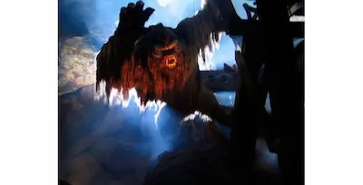

Special: Le (altre) migliori curiosità su Walt Disney World - Ep.38
By Valentina
13 Maggio 2021
Ecco le migliori curiosità che io e Davide di Parks and Fun abbiamo scovato per voi. Se non avete ancora letto - o visto - la parte riguardante il Walt Disney World Resort e Magic Kingdom, ecco il link al blog di Davide.
In questo articolo invece, così come nel podcast, vi parlerò delle curiosità relative ad EPCOT, Hollywood Studios e Animal Kingdom.
EPCOT
La celebre attrazione Mission Space - simulatore di un vero e proprio razzo in direzione Marte, è stata costruita grazie all’aiuto di autentici astronauti della NASA, che si sono improvvisati imagineers e hanno fornito preziose informazioni su come rendere questa attrazione la più reale possibile. Chiaramente l’attrazione era anche TROPPO vicina alla realtà di un razzo spaziale, tanto che Disney ha successivamente deciso di crearne una versione alternativa, più soft, che simulasse molta meno pressione in fase di lancio. Insomma: se volete provare la “vera” versione, ricordatevi che è quella arancione. In alternativa, se volete fare un’esperienza meno adrenalinica, quella verde fa al caso vostro.
Spostandoci al World Showcase, precisamente nel padiglione tedesco di EPCOT, vogliamo parlarvi di un’attrazione che non è mai stata aperta al pubblico: una specie di crociera sulle acque dei fiumi tedeschi, che vi avrebbe portato ad esplorare i luoghi più significativi del paese. Di questa attrazione, progettata, mezza costruita e poi abbandonata si conosce molto poco. Qual’è stata la causa dell’abbandono di questo progetto? Io e Davide abbiamo le nostre idee…
Immagine da disneyparks.com
Non si può parlare di EPCOT senza parlare del mitico Club Cool e della bevanda italiana per eccellenza: il Beverly. A questo argomento ho dedicato una sostanziosa parte di una delle ultime puntate del podcast, che vi linko qui, in caso ve la siate persa.
Ultima curiosità da EPCOT è la dimostrazione della cura dei dettagli che gli Imagineers hanno (o avevano?) durante la costruzione delle attrazioni e dei parchi di Walt Disney World. Mentre siete nel world showcase e guardate il padiglione del Marocco dall’altro lato del lago, vedrete una torre...in lontananza. Ecco, quella è la Tower of Terror degli Hollywood Studios, verniciata e decorata alla perfezione per sembrare parte integrante del padiglione del Marocco. Ecco una foto, riuscite a vedere la Tower of Terror?
Immagine da disneyparks.com
Disney's Hollywood Studios
Simbolo per eccellenza degli Hollywood Studios è senza ombra di dubbio la Tower of Terror: ma sapete come è nata l’idea per questa attrazione? Davide vi racconta da dove è nata l’idea e perchè quella degli Hollywood Studios è la vera e unica originale.
Altra curiosità sugli Studios è il fatto che all’inizio, questo parco era stato concepito solamente come un padiglione di EPCOT, nello specifico sarebbe dovuto essere una delle lands di Future World. La brillante mente di Michael Eisner - vecchio CEO della Disney - ha fatto sì che il progetto venisse invece sviluppato come parco aggiuntivo e direi che mai idea fu più azzeccata, nella guerra dei parchi a tema Film, contro gli Universal Studios Orlando vicini di casa.
Beauty and The Beast - Live on Stage è lo show più longevo show musicale di tutta Disney World. Fatta eccezione per l’ultimo anno, lo show è sempre andato in scena, fin dal giorno in cui La Bella e la Bestia uscì al cinema: il 22 Novembre 1991.
Disney's Animal Kingdom
A differenza degli altri tre parchi a tema di Walt Disney World, i servizi igienici del Disney's Animal Kingdom hanno tutti le porte all'ingresso. Questa pratica è in atto in modo che, nell'improbabile caso in cui ci sia un animale selvatico in giro per il parco, gli ospiti possano tenersi al sicuro all'interno dei bagni.
Immagine da Pinterest.com
Sapete perchè potete vedere un drago tra gli animali rappresentati nel simbolo di Animal Kingdom? Perchè nel progetto originale, un’area del parco sarebbe dovuta essere dedicata a creature magiche. Fu Joe Rohde, lo storico padre di Animal Kingdom, a cancellare questi piani e riportare l’attenzione su animali veri e propri. L’area che sarebbe dovuta essere destinata alle creature fantastiche è l’attuale DinoLand USA.
Non si poteva compilare la lista delle migliori curiositá di Walt Disney World senza parlare di Disco Yeti: l’animatronic più grande di tutta la storia dei parchi Disney che si trova dentro Expedition Everest ed è....rotto. Riusciranno i nostri eroi a ripararlo? Lo scopriremo solo vivendo, per ora ci tocca accontentarci delle luci stroboscopiche.

Immagine da attractionsmagazine.com
Se volete sapere più dettagli su queste curiosità, ascoltate il podcast e ricordatevi di andare a scoprire altri dettagli su Magic Kingdom e il Walt Disney World Resort su Parks and Fun.
Se questo episodio è stato interessante, non dimenticarti di seguirci sul podcast “Aperitivo a Main Street, U.S.A.”, disponibile su Spotify, Anchor e tutte le altre maggiori piattaforme audio!